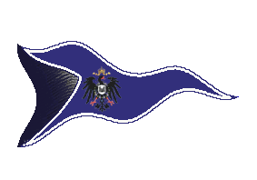
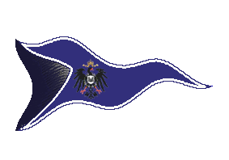

|

|
Das schwarze Brett
|
|
| Übersicht,
Anschl�ge und Stammtisch (RPG) |
|
_/SB_/ Kaperfahrer dringen in den Hain!
|
| Brendan (RIP) |
Gewiss ist er ersch�ttert, der ersch�tterte Lehnsherr, weil es ersch�tternd ist, welch ersch�tternde Dinge den Hain ersch�ttern.
Sir Brendan,
Anführer der glorreichen Nation "Bruderschaft der Kaperfahrer"
Zur 18. Stunde am 70.Dunkelfrost im Jahre 422 |
17.12.05 12:45
 |
|
| F�in Cortez (RIP) |
Weiterhin ist eine Aufklaerung meiner Nationsmitglieder sicher nicht noetig. Auch mir steckt noch immer die Unglaeubigkeit in den Knochen, von einer einstigen guten Freundin derart hintergangen worden zu sein.
Ich brauche glaube ich nur "Fall Menegroth" sagen...
MfG.
Graf F�in Sen�mis,
Vorsteher von Val ti Amo,
Stellvertretender Nationsf�hrer Ritter Esturiens,
H�ter des Chaos,
Aussenminister der Ritter Esturiens,
Magisch erzwungener Ehemann von Isabella Cortez,
Immer zwei mal mehr Kriegstreiber als Levthan
Zur 24. Stunde am 70.Dunkelfrost im Jahre 422 |
17.12.05 14:04
|
|
| Theoderich Buchenholz (RIP) |
Ich frage mich, warum Du so vehemment forderst, das den Laoten der Proze� gemacht wird Aylen? Bist Du Deiner Nation �berdr�ssig, oder warum forderst Du die Unterst�tzer der Paktierer - ob direkt oder indirekt - zur Rechenschaft?
Ist es nicht so, das die B�rgermeister stundenlang den Verkehr nach Aerlinn duldeten durch den diese sch�ndlichen Paktierer in den Hain eindringen konnten?
wahrlich, es w�re eine Schande Falster dafür verantwortlich zu machen, das er die Route nicht rechtzeitig unterband, bevor dieses Gesindel in den Hain eindringen konnte.
Da wird es auch nicht helfen, wenn ihr sagt, er h�tte es ja dann später getan, dass kann ja nur eine fadenscheinige Ausrede sein, bedenkt man, wie organisiert und vorbildlich verwaltet der laotische Staat ist.
Ein bis ins tiefste Mark ersch�tterte
Sir Theoderich Buchenholz,
Ehemann der reizenden Valeria
Zur 1. Stunde am 71.Dunkelfrost im Jahre 422 |
17.12.05 14:30
|
|
| Levthan Araxes (RIP) |
Ach Theo lass es einfach stecken Kleiner.
Kriech im Staub und winsel mal wieder um Gnade... so wie früher des �fteren.
Achja Fain...
Mit Menegroth zu vergleich, nein �berhaupt nicht.
Ibn de Witt hatte monatelange Kes von uns.
Diese Tusse, die sich Pheronprophetin nennen darf, war heute morgen beim legen der Route Ratsmitglied der AAA. Konnte Monate lang in den Hain, hat vor wenigen Tagen noch Feinde des Hains bek�mpft und hatte keinerlei KEs von oder an uns.
Tja... ein schlechtes Bild, dass die Prophetin ihrer ehemaligen Nation und ihres bis vor kurzem noch Lehensherren Drager gegen�ber zeichnet. Vom Konvent Pheron gegen�ber mal ganz abgesehen.
Pfalzgraf Levthan,
Vorsteher von Anud�ra,
Anführer der glorreichen Nation "CHROME",
Verlobter der reizenden Solara,
Oberster Kriegstreiber der Scherbe,
Kartograph
Zur 2. Stunde am 71.Dunkelfrost im Jahre 422 |
17.12.05 14:34
|
|
| Theoderich Buchenholz (RIP) |
Ja Levthan - das mach ich gerne - GNADE - geh von uns bitte! Stirb einfach und hab Erbarmen mit uns armen Scherbenbewohnern.
Oder wenn Du schon nicht sterben willst, verstumme doch wenigstens und verlerne das Schreiben?
*winsel*
Sir Theoderich Buchenholz,
Ehemann der reizenden Valeria
Zur 2. Stunde am 71.Dunkelfrost im Jahre 422 |
17.12.05 14:38
|
|
| F�in Cortez (RIP) |
Levthan, ich wusste garnicht, dass du Falsters Sprachrohr an die �ffentlichkeit bist...
Graf F�in Sen�mis,
Vorsteher von Val ti Amo,
Stellvertretender Nationsf�hrer Ritter Esturiens,
H�ter des Chaos,
Aussenminister der Ritter Esturiens,
Magisch erzwungener Ehemann von Isabella Cortez,
Immer zwei mal mehr Kriegstreiber als Levthan
Zur 2. Stunde am 71.Dunkelfrost im Jahre 422 |
17.12.05 14:44
|
|
| encalion b�liar (RIP) |
Seh da nicht so euer Problem. Soweit ich weiss muss doch der B�rge von Tharala Valafey für alle durch die Kaperfahrer im Hain entstehenden Sch�den aufkommen. Und wenns jetzt derjenige Tharalas B�rge is von dem ichs annehme sollte das doch kein Problem sein.
Bin immernoch am �berlegen, ob mir jetzt die Laoten oder die Kaperfahrer wegen ihres neuen Nationsmitglieds unsympathischer sind ...
encalion b�liar,
Hohepriester im Dienste des einzig wahren Glaubens an Pheron,
Anführer der glorreichen Nation "Volk von Esturia Draconis",
Ehemann der reizenden Feni� Aduciri�l,
Geissel des grauen Volks
Zur 3. Stunde am 71.Dunkelfrost im Jahre 422 |
17.12.05 14:51
|
|
Arafüriel � Athelas
|
Eins kann ich mit Sicherheit sagen: Die Nation der Academia ars Arcana hat nichts mit dieser hinterh�ltigen Aktion zu tun und distanziert sich ausdr�cklich davon und von der sogenannten "Verr�terin" Tharala Valafey.
Diese Aktion war weder in unserem Interesse und Wissen noch wurde sie von uns unterst�tzt. Es handelt sich hierbei um einen eventuell einer "Mid-Life-Crisis" zuzuschreibenden Alleingang der einzelnen Person Tharala Valafey in Zusammenarbeit mit ihrer neuen Gemeinschaft der Kaperfahrer.
Ich darf abschlie�end betonen, dass die Academia ars Arcana nach wie vor für friedliche Neutralit�t steht.
Baronesse Flocke mi Lu,
Vorsteherin von Arx ars Magica,
Ehefrau des ehrenwerten Exo mi Lu,
Schattenj�gerin des Orden des gr�nen Mondes
Zur 3. Stunde am 71.Dunkelfrost im Jahre 422 |
17.12.05 14:55
|
|
| encalion b�liar (RIP) |
Flocke hat doch niemand behauptet, denke aber nicht dass das für das B�rgen-System des Hains von Relevanz ist.
encalion b�liar,
Hohepriester im Dienste des einzig wahren Glaubens an Pheron,
Anführer der glorreichen Nation "Volk von Esturia Draconis",
Ehemann der reizenden Feni� Aduciri�l,
Geissel des grauen Volks
Zur 3. Stunde am 71.Dunkelfrost im Jahre 422 |
17.12.05 14:58
|
|
Arafüriel � Athelas
|
Aufgrund gewisser Anspielungen wollte ich die Sache nur ins rechte Licht r�cken. Man siehe beispielsweise eine Aussage von Pfalzgraf Levthan:
"Tja... ein schlechtes Bild, dass die Prophetin ihrer ehemaligen Nation und ihres bis vor kurzem noch Lehensherren Drager gegen�ber zeichnet. Vom Konvent Pheron gegen�ber mal ganz abgesehen."
Nur um Zweifel von vornherein auszur�umen...
Baronesse Flocke mi Lu,
Vorsteherin von Arx ars Magica,
Ehefrau des ehrenwerten Exo mi Lu,
Schattenj�gerin des Orden des gr�nen Mondes
Zur 4. Stunde am 71.Dunkelfrost im Jahre 422 |
17.12.05 15:00
|
|
| Levthan Araxes (RIP) |
Werte Baronesse Flocke mi Lu,
Wir wissen dies und wir vertrauen weiterhin unseren Freunden in eurer Nation.
Das Traurige an der gesammten Sache ist, dass die Verr�terin Tharala Valafey w�hrend ihren Taten Mitglied eurer NAtion und Lehensfrau von Dragar war.
Sie hatte nicht einmal den Anstand sich ihren neuen "Freunden" vorher anzuschliessen.
Pfalzgraf Levthan,
Vorsteher von Anud�ra,
Anführer der glorreichen Nation "CHROME",
Verlobter der reizenden Solara,
Oberster Kriegstreiber der Scherbe,
Kartograph
Zur 4. Stunde am 71.Dunkelfrost im Jahre 422 |
17.12.05 15:01
|
|
| Levthan Araxes (RIP) |
Encalion, auch wenn du ein Beliar bist und dazu noch Lehe von Fain... gesteh ich dir eigentlich zu, dass du des lesens f�hig bist.
Weiteroben steht doch schon geschrieben:
"Wir werden uns mit ihrem B�rgen auseinandersetzten. Zeitlichgleich noch mit ihrem Nationsf�hrer w�hrend sie die Route begonnen hat und mit ihrem Lehensherren zum Zeitpunkt des Angriffes auf unsere Geb�ude und unser Land. Dessen Vertrauen sie dadurch wohl ebenso ersch�ttert hat."
Pfalzgraf Levthan,
Vorsteher von Anud�ra,
Anführer der glorreichen Nation "CHROME",
Verlobter der reizenden Solara,
Oberster Kriegstreiber der Scherbe,
Kartograph
Zur 4. Stunde am 71.Dunkelfrost im Jahre 422 |
17.12.05 15:03
|
|
| Crom van de G�rtenzw�rg (RIP) |
*sich verwundert die Augen reibt*
Wahnsinn, dass ich so was noch erleben darf, hier mal paar sachliche und themenbezoge Anschl�ge von Levthan zu lesen, mal nicht die �blichen Beleidigungen und Verspottungen.
Es geschehen also doch noch wunder.
Crom van de G�rtenzw�rg,
Kardinal im Dienste des einzig wahren Glaubens an Pheron
Zur 5. Stunde am 71.Dunkelfrost im Jahre 422 |
17.12.05 15:19
|
|
Felsenwirt
|
*Eine in Rauch und Nebel geh�llte Gestalt betritt den Anschlagsplatz*
Vertraue den Propheten Pherons!
Lasset sie in eure Heime und in eure Stuben.
Sie werden euch verraten und verkaufen. So sind sie!
Wahrlich vertrauensw�rdige Personen, diese Propheten des "g�ttlichen" Pherons.
*spuckt aus und kichert d�monisch*
Felsenwirt |
17.12.05 15:30
|
|
| Hellron (RIP) |
na sowas,
Verrat bei den Laoch?
Das ist aber ungew�hnlich. Ich frage mich wie es zu so etwas kommen kann, bei einer solchen treuen Politik gegen�ber Verb�ndeten und wo sich doch Chrome an alle Vereinbarungen h�lt und sich nie etwas zu schulden kommen lassen.
Hellron,
Kardinal im Dienste des einzig wahren Glaubens an Pheron,
Legion�r Pherons
Zur 6. Stunde am 71.Dunkelfrost im Jahre 422 |
17.12.05 15:39
|
|
| Greyfax von Dah�n (RIP) |
Na ja, Bruder Crom, so ganz kann ich deiner Aussage noch nicht zustimmen. Da� Levthan nicht in der Lage ist Weltliches und Kirchliches zu trennen ist ja der ganzen Schwerbe bekannt.
Aber ich w��te noch nicht, da� der Pheron-Konvent Chrome und den Laoch den Krieg erkl�rt hat. Was Tharala Valafey hier abzieht ist eine weltliche Aktion gegen den Hain und die Laoch. Warum also die ewigen Beleidigungen gegen eine Prophetin Pherons. Ich würde gerne mal meinen Verk�nderkollegen des Urvankonventes h�ren, wenn man seine Propheten andauernd beleidigt.
Das Mitwirken von Paktierern bei diesen Angriffen gibt der Sache zus�tzlich noch einen faden Beigeschmack, wobei ich mich hier klar von einer vorschnellen Verurteilung von Brendan und den Kaperfahrern distanzieren m�chte, da� diese mit Paktieren Hand in Hand arbeiten. Das w�re den Laoch und Chrome jetzt sicher sehr genehm, aber noch ist nicht gekl�rt, ob die Paktierer hier nur als Schwarzfahrer auf den Wagen mit aufgesprungen sind und die Route benutzt haben. Oder ob Brendan mit ihnen aktiv zusammen arbeitet.
He, Levthan, wer selber Filzl�use hat, soll nicht auf andere zeigen. Ich erinnere mich da mal an die letzte Aktion der selbsternannten Exekutive der Scherbe, wo mal wieder alles selbst von Dir in die Hand genommen wurde, und mal eben noch Sigi von Hohenstein als Pl�nderer auf die Hafeninsel mit eingeschleppt wurde.
<<<(Zitat Levthan)Tja... ein schlechtes Bild, dass die Prophetin ihrer ehemaligen Nation und ihres bis vor kurzem noch Lehensherren Drager gegen�ber zeichnet. Vom Konvent Pheron gegen�ber mal ganz abgesehen.>>>
Die "Privatperson/Baronesse" zeichnet ein schlechtes Bild gegen�ber ihrer Nation. Und was bitte hat das mit dem Pheron-Konvent zu tun?
Levthan, warum versuchst du es denn immer und immer wieder auf so infantilem Wege dich l�cherlich zu machen. Wir wissen, da� du als Kind zu wenig Liebe und Aufmerksamkeit bekommen hast und es ist sicher schwer so eine schlimme Kindheit aufzuarbeiten, aber der Pheron-Konvent kann wirklich nichts dafür, da� du unter solchen Minderwertigkeitskomplexen leidest. Aber wenn es Dir danach besser geht, dann darfst du mir gerne eine KE zukommen lassen. Als Verk�nder Pherons liegt selbst mir etwas an deinem Seelenheil. Beleidige doch nicht eine Prophetin eines Glaubens der Guten Sieben. Das passt eher zu einem Paktierer und Ketzer. Und gerne lebe ich, wie auch jedes Mitglied des Konventes, mit einer KE von Dir, wenn es Dir dann besser geht.
M�ge Pheron dich, unser aller Pr�fung, sch�tzen und beh�ten.
Greyfax von Dah�n,
Hohepriester im Dienste des einzig wahren Glaubens an Pheron,
Kartograph
Verk�nder des Glaubens an Pheron
Zur 19. Stunde am 71.Dunkelfrost im Jahre 422 |
17.12.05 18:37
|
|
| Holzi Kahlschlag (RIP) |
Sowas nennt sich Verk�nder Pherons.
Ihr solltet nochmal eure Ausdrucksweise �berdenken, die ihr hier �ffentlich preis gebt.
Holzi Kahlschlag
Zur 20. Stunde am 71.Dunkelfrost im Jahre 422 |
17.12.05 18:50
|
|
| Greyfax von Dah�n (RIP) |
Werter Holzi Kahlschlag, ich habe Eure einseitige Sichtweise schon damals bei Levthans Anklage gegen mich, sehr zu sch�tzen gewusst.
Und siehe da, ich bin nicht nur immer noch im Konvent Pherons, sondern sogar dessen Verk�nder des Glaubens.
Habt Ihr einmal in Betracht gezogen, da� der Rest der Leute vielleicht es anders sieht als Ihr und Levthan?
Und ich habe meines Wissens nicht das Wort "Tusse" bei einer Prophetin gebraucht. Und für die Taten von Sigi von Hohensteins gibt es auf der Hafeninsel leider genug Betroffene.
Greyfax von Dah�n,
Hohepriester im Dienste des einzig wahren Glaubens an Pheron,
Kartograph
Verk�nder des Glaubens an Pheron
Zur 21. Stunde am 71.Dunkelfrost im Jahre 422 |
17.12.05 19:02
|
|
| B�lanor Z�nith (RIP) |
Wir Inghams w�ren sofort aus dem Konvent verbannt worden.
sowas nenn ich Titten Bonus!
Sir Tyxaro von Ingham,
Ehemann der reizenden Doireann Z�nith,
Versteinerer aus Leidenschaft,
W�chter von Lager West
Zur 21. Stunde am 71.Dunkelfrost im Jahre 422 |
17.12.05 19:08
|
|
| Holzi Kahlschlag (RIP) |
Ihr benehmt euch aber leider wie ein kleines Kind, was der Pfalzgraf Levthan sagt und wie er sich �u�ert ist mir egal.
Er bekleidet aber keinen Verk�nder Rang.
M�ge euch Pheron Wei�heit schenken....
Holzi Kahlschlag
Zur 21. Stunde am 71.Dunkelfrost im Jahre 422 |
17.12.05 19:11
|
|
| B�lanor Z�nith (RIP) |
sagt ein kleiner Laotenzwerg,
Man sagt Zwerg sind die besten H�hlenforscher.
Hotzi, wie tief bist du bei Falsters Hinterteil gekommen?
Sir Tyxaro von Ingham,
Ehemann der reizenden Doireann Z�nith,
Versteinerer aus Leidenschaft,
W�chter von Lager West
Zur 22. Stunde am 71.Dunkelfrost im Jahre 422 |
17.12.05 19:13
|
|
| Holzi Kahlschlag (RIP) |
Nicht so weit , wie du im G�tzen Hinterteil...
Holzi Kahlschlag
Zur 22. Stunde am 71.Dunkelfrost im Jahre 422 |
17.12.05 19:15
|
|
| B�lanor Z�nith (RIP) |
G�tzen was?
tut mir leid, ihr redet wirr, dummer Zwerg.
Sir Tyxaro von Ingham,
Ehemann der reizenden Doireann Z�nith,
Versteinerer aus Leidenschaft,
W�chter von Lager West
Zur 22. Stunde am 71.Dunkelfrost im Jahre 422 |
17.12.05 19:20
|
|
| Holzi Kahlschlag (RIP) |
*lacht* Uhh nun habt ihr wahrlich eine gro�e Beleidigung ausgesprochen.
Ja G�tzen, so nennt ihr ihn, kann natürlich bei euch anders hei�en, vielleicht Frieda oder Herbert.
Und kommt mir nicht jetzt das ihr einen der Lichtsieben huldigt und ich diesen beleidigen würde...
Holzi Kahlschlag
Zur 23. Stunde am 71.Dunkelfrost im Jahre 422 |
17.12.05 19:30
|
|
| Levthan Araxes (RIP) |
Holzi nicht aufregen.
Wer den Verk�nder Pheron noch auf der Scherbe ernst nimmt ist selbst schuld.
Er siedelt gem�tlich auf der �stlichen Hafeninsel.
Neben ihm �berf�hrte Paktierer.
Von daher.. die Witzfigur der Scherbe ist eher jemand anderes.
Im Pheronkonvent sitzen weltliche Gegner von uns Holzi... dort irgendwelches Handeln gegen Paktierer oder deren Unterst�tzer zu finden. Vergiss es einfach mal.
Pfalzgraf Levthan,
Vorsteher von Anud�ra,
Anführer der glorreichen Nation "CHROME",
Verlobter der reizenden Solara,
Oberster Kriegstreiber der Scherbe,
Kartograph
Zur 2. Stunde am 72.Dunkelfrost im Jahre 422 |
17.12.05 20:09
|
|
| Itto Ogami (RIP) |
einfach g�ttlich *lacht immer noch*
Sir Drake,
Kardinal im Dienste des einzig wahren Glaubens an Pheron,
Medicus der Provinz Brilandia
Zur 2. Stunde am 72.Dunkelfrost im Jahre 422 |
17.12.05 20:12
|
|
Dark Crimson
|
*muhahaha*
Ich dachte Laoch bzw. Laot w�re schon eine beleidigung an sich, aber bei diesen Anschl�gen hier...w�rd ich Holzi noch dazu nehmen *lacht*
Am�santer Laochabschaum, ham doch tats�chlich untereinander Geheimnisse. Da wei� die rechte Hirnh�lfte nicht was die linke macht.
Dark Crimson |
17.12.05 20:12
|
|
| Kimsa Tirjolfsson (RIP) |
Da wurde es der prophetin wohl zu langweilig GUT zu sein.
Nunja verrat egal von wem gegen wen sollte man nicht guthei�en. Kann man sich den Sicher sein nicht der nächste auf der Liste zu sein?
Und somit hat der Pheron-Konvent eine witere Berufspl�nderin in ihren Reihen.
Mal sehen ob sich nun auch pl�tzlich ein paar zum glauben an Pheron bekennen um diesen "Missstand" zu beheben.
Aber wie sagte ich schon in den Hallen des Weisen
Die gr��te Schuld findet man dort, wo man die gr��te Unschuld vermutet
Kimsa Tirjolfsson,
Verlobter der reizenden Shanna Khan,
Geissel des Intrigenzimmers
Zur 9. Stunde am 72.Dunkelfrost im Jahre 422 |
17.12.05 21:50
|
|
| Dr. Nightmare (RIP) |
*grinst belustigt*
Am�sant wie sich nun auch 1. unbeteiligte Seiten gegen die schmutzige, und damit meine ich die Seite der Laoch und jenen die ihnen im Hintern stecken, erheben.
Es mag ein gro�es Zeitalter eintreten in dem die Besseren das mit bisher zuviel Gl�ck beschenkte Laotenvolk zur�ckdr�ngen werden.
Auch wenn Ihnen das Gl�ck bei der Verteilung von Intelligenz als auch guten Aussehens nicht hold war...
Man stelle sich den Hain als ein St�ck Brot vor und die St�dte sowie deren Bewohner als ein dickes St�ck Wurst... wie lange es wohl dauern wird bis dieses St�ck Brot mitsamt des k�stlichen Belags zu verderben beginnt?
Doch sagt man nicht auch faules Fleisch verdirbt nie?
Man darf gespannt sein was sich weiterhin ergibt.
Sicher ist - die Zeit der Zwangsherrschaft unter dem Laotenpack neigt sich dem Ende zu!
für alle jene welche bisher vom Anblick der Laoch d�Orchadas verschont gelieben sind, merket:
Leichenblass und dumm wie Brot, ja Pheron weiss er ist Laot!
Drax Sen�mis
Sir Drax Sen�mis
Zur 11. Stunde am 72.Dunkelfrost im Jahre 422 |
17.12.05 22:23
|
|
Cadacan von Tacheless
   |
Boar, is das erb�rmliche Propaganda^^
Mal was informatives für die Leser, es wurden bereits einige der Agressoren, Kaperfahrer, aus dem Hain entfernt.
Pfalzgraf Cadacan von Tacheless,
Vorsteher von Burg Hohenstaufen,
Anführer der glorreichen Nation "Schwingen der Sieben",
Verteidigungsministerchen,
Chaosmagier,
Witwer der reizenden Sara von Tacheless
Zur 11. Stunde am 72.Dunkelfrost im Jahre 422 |
17.12.05 22:27
|
|
| Dior e Feye (RIP) |
bloss er tapfere drax wurde nirgends gesehen.
Weil er wohl bloss mit den worten stark ist. aber das ist ja hinl�nglich bekannt. er hat sich ja auch aus angst geweigert, mich pers�nlich zu treffen.
llewelyn,
Priester im Dienste des einzig wahren Glaubens an Urvan,
Verlobter der reizenden Lysira Sternenlicht
Zur 16. Stunde am 72.Dunkelfrost im Jahre 422 |
17.12.05 23:36
|
|
| Tankul v. Skavenblight (RIP) |
ein Hohepriester , schon alt an Jahren geht auf seinen Stock gest�tzt auf den Marktplatz, erklettert ein wenig m�hsam einen Podest blickt in die Runde und beginnt mit einer Stimme, welche man diesem alten Mann nicht zugetraut h�tte, zu sprechen*
Ihr Scherblinge, Ihr die ihr allen Paktierern und Pl�nderern huldigt *sein Blick hat etwas Durchdringendes als er diesen auf einige der Anwesenden richtet*
Wie lange wollt Ihr Euch noch an solch widerw�rtigem Schauspiel erg�tzen?
Ihr applaudiert und klatscht Paktierern Beifall, jenen Paktierern die schon morgen Euch als Ziel auserwählen k�nnten, die schon morgen vor Eurer T�re stehen k�nnten.
Eure Frauen vergewaltigen, Eure M�nner und Kinder von Euren L�ndereien verschleppen und ihrem D�mon als Sklaven opfern.
Wie gro� muss Euer Hass auf den König sein, dass ihr solchem Mopp Beifall klatscht.
Oder ist es gar nur der Neid, der aus Euch spricht.
Selbst Diener Pherons sind sich für einen Verrat nicht zu schade.
Heute wurde eine Nation verraten, wird es morgen der Konvent sein, welche diese Prophetin verr�t?
Ja ich h�re schon euer Gemurmel, die einen sagen es herrscht Krieg, die anderen der König ist ein Tyrann.
Beides mag zutreffen, dass Kriege herrschen dringt sogar bis in die hl. Hallen Pherons.
Ob der König ein Tyrann ist mag ich nicht zu beurteilen, denn ich hatte noch nie das Vergn�gen.
Doch eines kann ich beurteilen�.. Euch
*l�sst wieder seinen Blick �ber die Anwesenden gleiten*
Euch, die Ihr zu feige seid, dies offen zu sagen, zu feige selbst gegen Aerlin zu ziehen, wenn Euch der König nicht gefällt und diesen von seinem Thron zu st�rzen, da es euch zu st�ren scheint, wenn er dort Hof h�lt.
Doch dazu geh�rt Mut, Einsatzkraft, milit�risches Geschick und nicht zuletzt das Wichtigste.
E h r e !
Doch ihr unterst�tzt Huldiger der Absieben, den Abschaum der Scherbe, den Bodensatz unserer Gesellschaft.
Das sind eure Helden *ein schallendes Lachen dringt aus der Tiefe seiner Kehle*
Jeder Bauer , jeder Sch�rfer, jeder geschundene Sklave hat mehr Ehre im Leib, denn ihr.
Der Tag wird kommen und ihr werdet wieder hier stehen, doch diesmal nicht gr�lend einem Haufen Paktierern zujubelnd, sondern Eure Familien und Freunde beweinend, welche durch Eure Gleichg�ltigkeit ihr Leben lassen müssen.
Oder denkt ihr allen Ernstes dieser Abschaum macht vor Euch halt, nur weil ihr ihm heute zujubelt.
Wie t�richt und blind ihr doch alle seid, wie geblendet in Eurem Hass und Eurer Missgunst.
Die Zeit wird kommen und Ihr werdet meiner Worte gedenken, mag sein dass ich dann nicht mehr unter den Lebenden weile, doch fürchte ich den Tod nicht, denn in einer Welt wie dieser kann er nur noch eine Erl�sung sein.
*blickt noch einmal in die Runde, klettert schwer atmend von dem Podest und geht gest�tzt auf seinem Stock seines Wegs*
Tankul v. Skavenblight,
Kardinal im Dienste des einzig wahren Glaubens an Pheron
Zur 16. Stunde am 72.Dunkelfrost im Jahre 422 |
17.12.05 23:36
|
|
| Dr. Nightmare (RIP) |
Nun unwerter llewelyn,
der "Stille Tod" ist euch wohl kein Begriff...? *grinst*
Sir Drax Sen�mis
Zur 18. Stunde am 72.Dunkelfrost im Jahre 422 |
17.12.05 23:58
|
|
| Fiorel Quelleloss (RIP) |
Es ist immer wieder traurig zu sehen wie schnell der eine dem anderen vorwerfen kann, was man selber erst vor kurzem getan oder in Zukunft tun wird.
Sir Rannug Mc Duck
Zur 2. Stunde am 74.Dunkelfrost im Jahre 422 |
18.12.05 7:34
|
|
Amrod Aldarion
 |
Ihr beschimpft die Angreifer auf den Laochs als Ketzer und D�monenanbeter? Dann frage ich mich warum meine Armeen in den letzten Tagen verst�rkt die Untoten der G�tzen bek�mpfen müssen.
Da komme ich zum Schluss das die D�monenanbeter scheinbar in den gegnerischen Reihen zu suchen sind.
Ich werde mich hier aber nicht zu dem herablassen was die Laochs hier treiben und alle �ber einem Kamm scheren und behaupten das alle Laoch D�monenanbeter sind.
Ich gehe eher davon aus das es dort auch einen bestimmten Anteil dieser Anbeter gibt, wie sie �berall auf der Scherbe zu finden sind.
Aber langsam frage ich mich, ob sich nicht hier schon einige D�monenanbeter gezeigt haben, hier wurde zum Beispiel ganz offen der Verk�nder Pherons verspottet, wenn das mal kein Zeichen ist ...
Baron Amrod Aldarion,
Anführer der glorreichen Nation "Niflheims Kjemper"
Zur 16. Stunde am 74.Dunkelfrost im Jahre 422 |
18.12.05 10:50
|
|
Felaria Mendalon
.GIF) |
Baron Amrod ,wir fragen uns auf welche fakten sich euere sehr k�hnen behauptungen st�tzen ,wom�glich habt ihr gar mehr untote bei euch weil die pl�ndernden d�monenanh�nger m�chtiger werden .
da sich die lismafaganischen taten h�ufen und auch die anderen absieben sicherlich auf ihre kosten kommen , solltet ihr wom�glich �berdenken ob ihr der richtigen seite symphatie schenkt .
Gr�fin Felaria Mendalon,
Vorsteherin von Winternacht,
Anführerin der glorreichen Nation "Freie Grafschaft Winternacht"
Zur 18. Stunde am 75.Dunkelfrost im Jahre 422 |
18.12.05 16:24
|
|
Amrod Aldarion
|
Ich bin mir sicher das ich auf der richtigen Seite stehe ...
Ich werde niemals ein Haupt vor einem König beugen, der seine macht durch die Unterdr�ckung der Schw�cheren erlangt hat, aber inzwischen seit auch ihr durch euren Hass erblindet, dass ihr bestimmte Entwicklungen nicht mehr seht.
Die Zeit wird zeigen wie die ganze Geschichte endet, aber zum Schluss werden alle nur die Verlierer sein ...
Baron Amrod Aldarion,
Anführer der glorreichen Nation "Niflheims Kjemper"
Zur 21. Stunde am 75.Dunkelfrost im Jahre 422 |
18.12.05 17:05
|
|
Felaria Mendalon
|
ihr seid gegen die unterdr�ckung der schwachen ,und doch unterst�tzt ihr dieses pack ?
scheinbar wisset ihr nicht so recht mit was diese im allgemeinen so ihren lebensunterhalt fristen .
plündern rauben morden stehlen , und da sie eben nicht immer im hain sind ,berauben sie die sie können kleinere blockfreie nationen ,nationslose ,wichtel welche unter larjas schutz stehen , und das alles auch gerne mit hilfe von d�monen.
da beuege ich doch lieber mein haupt vor König falster und lebe in einer halbwegs sicheren scherbe als zu billigen das die scherbe an diese absiebenhuldigenden brandschatzer fällt , wer stellt sich diesem pack entgegen wenn König falster nichtmehr sein sollte ?
Gr�fin Felaria Mendalon,
Vorsteherin von Winternacht,
Anführerin der glorreichen Nation "Freie Grafschaft Winternacht"
Zur 6. Stunde am 76.Dunkelfrost im Jahre 422 |
18.12.05 19:21
|
|
Amrod Aldarion
|
*lacht*
ihr seid verblendet
und ihr werdet scheinbar von einem Ketzer als Freundin bezeichnet, als er für Euren Warenankauf in Winternacht wirbt.
ist das Zufall?
und ist nich auch der Verrat an Freunden wider den Lichtsieben? Dann frage ich mich warum die Laochs ihre Verb�ndetnen verraten haben? Und sie werden jeden, der ihrem Eroberungszug �ber der Scherbe im Wege steht, vernichten ob Freund oder Feind ...
Baron Amrod Aldarion,
Anführer der glorreichen Nation "Niflheims Kjemper"
Zur 8. Stunde am 76.Dunkelfrost im Jahre 422 |
18.12.05 19:42
|
|
Felaria Mendalon
|
ich kenne diese dame nicht , allerdings sollte euch klar sein das wir seit einiger zeit von den untoten der absieben heimgesucht werden und das nicht zum ersten mal , und diese auch mit list und t�cke arbeiten.
beantwortet doch einfach einmal meine frage baron Amrod , wer wird sich siesen personen entgegenstellen wenn König falster nichtmehr sein sollte .
Gr�fin Felaria Mendalon,
Vorsteherin von Winternacht,
Anführerin der glorreichen Nation "Freie Grafschaft Winternacht"
Zur 8. Stunde am 76.Dunkelfrost im Jahre 422 |
18.12.05 19:47
|
|
Amrod Aldarion
|
dann solltet ihr selbst wieder zum Schwert greifen ...
aber dieser Krieg hat eigentlich nicht mit dem Glaube zu tun sondern ist ein rein politischer Grund, denn durch die Kriegsvorbereitungen Eures geliebten Königs auf mein Nationsgebiet, bin ich zu diesem Krieg gezwungen worden und ich werde solange k�mpfen bis der Krieg von uns abgewendet wurde und der König sich nur noch für seinen Hain interessiert.
Aber wie gefällt euch der Krieg? ihr erfahrt ihn ja seit vielen Monden das erste mal wieder auf befreundeten Boden, seitdem letztenmal hat euer geliebter König oder seine Verb�ndete, viele weitere Kriege gef�hrt aber dort wurde nie von Mord und PlÄnderungen gesprochen, denn es war ja rechtens, es war ja der König der den Krieg f�hrte und nun kommt der Krieg zur�ck ...
Baron Amrod Aldarion,
Anführer der glorreichen Nation "Niflheims Kjemper"
Zur 9. Stunde am 76.Dunkelfrost im Jahre 422 |
18.12.05 20:05
|
|
Felaria Mendalon
|
wir kennen selbstverst�ndlich nicht jedes schlachtfeld auf dem gek�mpft wurde , doch meines wissens gab es stehts einen guten grund für des Königs handeln .
was den krieg angeht so kommen wir damit zurecht , es gibt auch noch bei uns einige offenen rechnungen die wir früher oder später begleichen werden .
Gr�fin Felaria Mendalon,
Vorsteherin von Winternacht,
Anführerin der glorreichen Nation "Freie Grafschaft Winternacht"
Zur 14. Stunde am 76.Dunkelfrost im Jahre 422 |
18.12.05 21:13
|
|
Amrod Aldarion
|
so hat jeder seinen grund warum er k�mpft ...
Baron Amrod Aldarion,
Anführer der glorreichen Nation "Niflheims Kjemper"
Zur 15. Stunde am 76.Dunkelfrost im Jahre 422 |
18.12.05 21:28
|
|
| Dr. Nightmare (RIP) |
"...doch meines wissens gab es stehts einen guten grund für des Königs handeln."
Gute Gr�nde sind schnell und einfach geschaffen... doch wissen wir alle dass der werte Herr König soetwas nie ausnutzen würde...
*spricht er ironisch und rollt mit den Augen*
Sir Drax Sen�mis
Zur 21. Stunde am 76.Dunkelfrost im Jahre 422 |
18.12.05 23:01
|
|
| thanatos (RIP) |
ach felaria das ihr denkt das der "König" immer einen grund hat um das volk der scherbe zu unterdr�cken und seine gebiete zu erweitern schaut euch mal wieder �hnlich wie naive kann nur ein einzelner mensch sein...
der "König" ist nichts weiter als ein tyran der in seine schranken zu weisen ist und alle die ihm treudoof nachlaufen werden mit ihm untergehen früher oder später doch die zeit wird kommen
thanatos b�liar,
Kardinal im Dienste des einzig wahren Glaubens an Pheron,
Ehemann des ehrenwerten Rollblack c�n H�nor b�liar
Zur 22. Stunde am 76.Dunkelfrost im Jahre 422 |
18.12.05 23:08
|
|
| Aylen von Distelflamme (RIP) |
Und so pl�nderte und mordete Tharala Valafey mit den Absieben Hand in Hand, waehrend der Pheronkonvent die Augen verschloss...[/I]
Werter Verkuender, eure Anschauungen der Tatsachen reizen mich zum Lachen.
Ich selbst sah die Prophetin auf den Resten unserer Verteidigungsanlagen, zusammen mit �berf�hrten Paktierern wie anGur Sikaryan und Amorous Meara.
Beruhten frühere Aussagen und Beobachtungen noch auf indirekten Handlangerschaften, ist die Unterstuetzung der Prophetin nun eine direkte geworden.
Welcher lichte Konvent duldet es, dass seine hoechsten Wuerdentraeger mit diesen Subjekten Hand in Hand arbeiten? Bis gestern haette ich noch den Kopf geschuettelt.
Doch nun muss ich sagen: Ihre Neigung zu den Absieben ist schon lange nicht mehr weltlicher Natur.
Kommt euren Pflichten nach, Greyfax von Dah�n, und verzettelt euch nicht in einen kleinkarierten Wortkrieg mit Levthan. Hier geht es um mehr als blosse Vermutungen, hier geht es um Tatsachen!
fürstin Aylen von Distelflamme,
Vorsteherin von K�stenfestung Girangoth,
Moladh an Ealain do Caint,
Ehefrau der reizenden C�ilin Arafhen v Distelflamme,
Siegerin des ersten Scherbenturneys in der Disziplin Freikampf,
Siegerin des ersten Scherbenturneys in der Disziplin Eis
Zur 10. Stunde am 79.Dunkelfrost im Jahre 422 |
19.12.05 13:16
|
|
| Brendan (RIP) |
Die Tatsache, dass sich in einem Gebiet mehrere Personen aufhalten, beweist noch lange nicht, dass diese zusammen geh�ren oder gar gemeinsam operieren.
Ich weise diese Behauptung entschieden zur�ck, denn als ich j�ngst in Aerlinn weilte, waren dort wohl sehr viele Laoten anwesend, mit denen ich aber bis auf die r�umliche N�he nichts weiter gemein hatte.
Freiherr Brendan,
Anführer der glorreichen Nation "Bruderschaft der Kaperfahrer"
Zur 11. Stunde am 79.Dunkelfrost im Jahre 422 |
19.12.05 13:20
|
|
| Aylen von Distelflamme (RIP) |
Die Tatsachen, dass eine Prophetin Pherons �berfuehrten Pluenderern dabei zusieht, wie sie einen Turm aufbrechen?
Oder die Tatsache, dass ich Eldj�rn �vi Ejolfsson zusammen mit eurer Kapferfahrerin in meinem Hoheitsgebiet erwischte?
Die Geschichtswichtel berichten davon...
Deine Ignoranz Brendan, ist unglaublich.
fürstin Aylen von Distelflamme,
Vorsteherin von K�stenfestung Girangoth,
Moladh an Ealain do Caint,
Ehefrau der reizenden C�ilin Arafhen v Distelflamme,
Siegerin des ersten Scherbenturneys in der Disziplin Freikampf,
Siegerin des ersten Scherbenturneys in der Disziplin Eis
Zur 12. Stunde am 79.Dunkelfrost im Jahre 422 |
19.12.05 13:31
|
|
| Brendan (RIP) |
Die Tatsache, dass ich im Hain bin, macht mich doch auch nicht zum Laotenfreund oder gar zu einem ebensolchen! Das fehlte ja noch!
Und wenn ich euch zusehe, wie ihr einen Paktierer niederpr�gelt, hei�t das auch noch lange nicht, dass ich Euer Freund bin - ebensowenig, wie ich ein paktierer bin, wenn ich zusehen mu�, wie ein �berm�chtiger solcher sich durch eure Reihen m�ht.
Freiherr Brendan,
Anführer der glorreichen Nation "Bruderschaft der Kaperfahrer"
Zur 12. Stunde am 79.Dunkelfrost im Jahre 422 |
19.12.05 13:33
|
|
| Brendan (RIP) |
Nachtrag:
Ich würde ja auch niemals zu einem Konvent laufen und behaupten, dass Ihr mit Margintanor-Paktierern zusammenarbeitet, nur weil Mitgleider der Nation "Piraten der Scherbe" im Hain einige Produktionsgeb�ude stehen haben und offensichtlich auch den Zutritt genie�en, werte Ex!
Freiherr Brendan,
Anführer der glorreichen Nation "Bruderschaft der Kaperfahrer"
Zur 13. Stunde am 79.Dunkelfrost im Jahre 422 |
19.12.05 13:45
|
|
| Fir�ion (RIP) |
interessant...
Sir Fir�ion,
Ehemann der reizenden Druellae
Zur 14. Stunde am 79.Dunkelfrost im Jahre 422 |
19.12.05 14:05
|
|
| Eldj�rn von Kazaana (RIP) |
*lacht* Falster muss echt besser auf seine Untergeben aufpassen. Aber das Gebiet Hoheitsgebiet zu nennen find ich sehr am�sant. Ich seh weit und breit nur Kameldreck, mein Gewand, vor allem die Schuhe sind dreckig und so langsam nehm ich den Geruch da drin an... Ich br�uchte dringendst ein Bad aber sauberes Wasser gibts da drin garnicht... Aja, da schon �fters das Wort Stechm�cke bzw. M�ckenstiche gefallen ist... Wir sind gerade dabei dagegen was zu unternehmen... Selbst laoten sollten wissen, dass Kameldreck die Viecher anlockt...
Eldj�rn �vi Ejolfsson
Zur 15. Stunde am 79.Dunkelfrost im Jahre 422 |
19.12.05 14:21
|
|
| F�in Cortez (RIP) |
Rein fürs Protokoll, wurde dem Frankenreich ebenfalls mit Krieg gedroht oder haben sie derzeit keine interessanten St�dte, die es zu erobern gilt?
MfG.
Graf F�in Sen�mis,
Vorsteher von Val ti Amo,
Stellvertretender Nationsf�hrer Ritter Esturiens,
H�ter des Chaos,
Aussenminister der Ritter Esturiens,
Magisch erzwungener Ehemann von Isabella Cortez,
Immer zwei mal mehr Kriegstreiber als Levthan
Zur 23. Stunde am 79.Dunkelfrost im Jahre 422 |
19.12.05 16:10
|
|
| F�in Cortez (RIP) |
Achja, generell bin ich interessiert an jeglichen Kriegsdrohungen, welcher Seite auch immer, um mir ein Bild �ber die derzeitige Gesamtsituation der Scherbe zu machen.
MfG.
Graf F�in Sen�mis,
Vorsteher von Val ti Amo,
Stellvertretender Nationsf�hrer Ritter Esturiens,
H�ter des Chaos,
Aussenminister der Ritter Esturiens,
Magisch erzwungener Ehemann von Isabella Cortez,
Immer zwei mal mehr Kriegstreiber als Levthan
Zur 23. Stunde am 79.Dunkelfrost im Jahre 422 |
19.12.05 16:17
|
|
| Nemesis Ezekiel (RIP) |
Vielleicht um einen Nutzen daraus zu ziehen, werter Graf?
Wie war das doch das Sprichwort?
Wenn sich zwei streiten, freut sich der Dritte...*schmunzelt*
Nemesis Ezekiel
Zur 23. Stunde am 79.Dunkelfrost im Jahre 422 |
19.12.05 16:18
|
|
| F�in Cortez (RIP) |
Der Nutze heisst Wissen, hübsche Dame.
Graf F�in Sen�mis,
Vorsteher von Val ti Amo,
Stellvertretender Nationsf�hrer Ritter Esturiens,
H�ter des Chaos,
Aussenminister der Ritter Esturiens,
Magisch erzwungener Ehemann von Isabella Cortez,
Immer zwei mal mehr Kriegstreiber als Levthan
Zur 24. Stunde am 79.Dunkelfrost im Jahre 422 |
19.12.05 16:28
|
|
| Nemesis Ezekiel (RIP) |
Es n�tzt nicht viel, es nur zu wissen, werter Graf!
Die Anwendung dessen, w�re der gr�ssere Erfolg. *l�chelt*
Nemesis Ezekiel
Zur 1. Stunde am 80.Dunkelfrost im Jahre 422 |
19.12.05 16:36
|
|
| Eldj�rn von Kazaana (RIP) |
nana, fain das ist was pers�nliches, weil diverse laoten mir seit längerem den Krieg erkl�rt haben und das hat nichts mit dem frankenreich zu tun...
Wenn ich schon als "Feind des Haines" *muss kurz grinsen* bezeichnet werde muss ich dem doch gerecht werden...
sollten andere diesen privaten Krieg nicht akzeptieren und daraus eine Nationssache machen wollen, werde ich unverz�glich die Nation verlassen.
Eldj�rn �vi Ejolfsson
Zur 1. Stunde am 80.Dunkelfrost im Jahre 422 |
19.12.05 16:41
|
|
| F�in Cortez (RIP) |
*nickt* Danke für die Aufkl�rung mein Freund.
MfG.
Graf F�in Sen�mis,
Vorsteher von Val ti Amo,
Stellvertretender Nationsf�hrer Ritter Esturiens,
H�ter des Chaos,
Aussenminister der Ritter Esturiens,
Magisch erzwungener Ehemann von Isabella Cortez,
Immer zwei mal mehr Kriegstreiber als Levthan
Zur 1. Stunde am 80.Dunkelfrost im Jahre 422 |
19.12.05 16:43
|
|
| Malachias (RIP) |
Ich habe Krieg mit meinem Pers�nlichen Freund Nevnar Stein, zu Deiner Info werter Fain ;-)
ansosten bin ich H�ndler :-P
Zeuss
Zur 16. Stunde am 80.Dunkelfrost im Jahre 422 |
19.12.05 20:10
|
|
Übersicht,
Anschl�ge und Stammtisch (RPG)
|
|
|
|


.GIF)